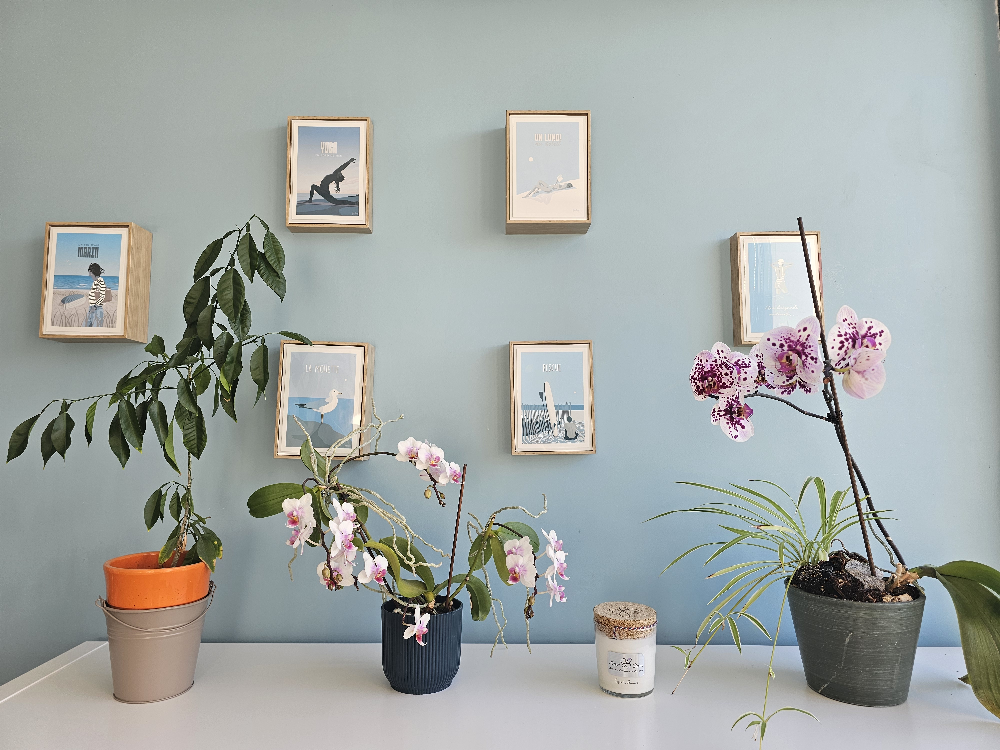

Un appel de 15 minutes pour faire le point sur votre situation et voir si un bilan de compétences vous correspond. Gratuit, sans engagement.
4 allée des Chardonnerets
33610 Cestas (Gironde)
Le bilan de compétences se déroule en présentiel dans mon cabinet à Cestas.
Lundi – Vendredi : 9h00 – 18h00
Samedi sur rendez-vous

Gratuit · 15 minutes · En visio
Les séances de bilan se déroulent ensuite en présentiel à Cestas (obligation Qualiopi/VAST RH).
Le bilan est finançable via le CPF (jusqu'à 1 600 €). Un reste à charge de 103 € s'applique pour les salariés — demandeurs d'emploi et co-financement employeur exemptés. On fait le point ensemble lors de l'appel découverte.
Vérifier mon solde CPF →